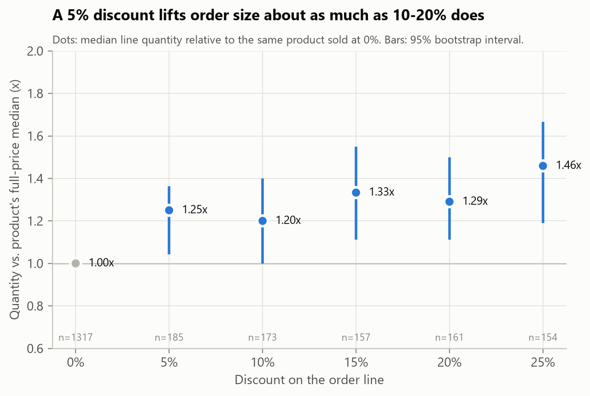
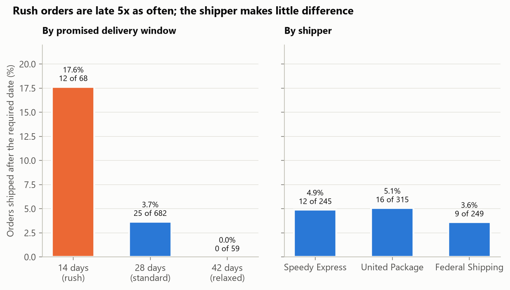
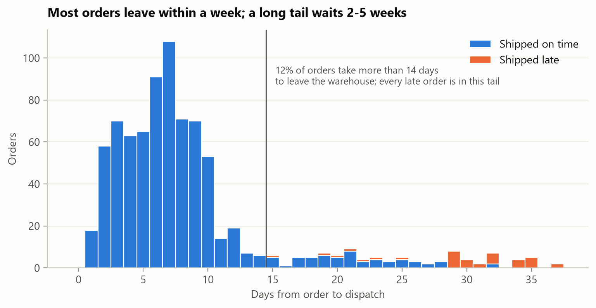
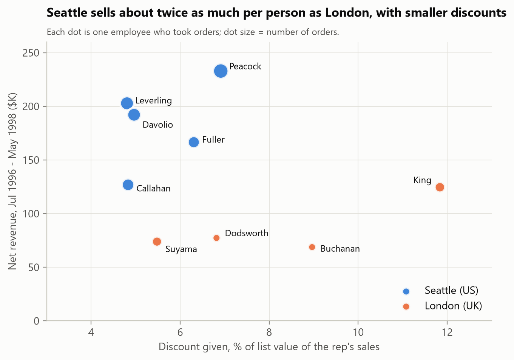

15.561 · Homework 3 · Northwind Traders, Jul 1996 – May 1998
Where Northwind loses margin and misses deadlines
An analysis of 830 orders and $1.27M in net revenue for Northwind's sales manager. Three questions cover how the company discounts, ships, and sells, and each answer ends with a decision the manager can make.
Question 1
Do deeper discounts buy bigger orders, or do they just give away revenue?
Why it matters
Northwind gave away $88,666 in discounts, 6.6% of the list value of everything it sold, and 46% of orders had at least one discounted line. A discount pays for itself only if it brings extra volume. If a 25% discount brings no more volume than a 5% discount, the extra 20 points are revenue given away for nothing.
Approach
- Analyzed all 2,155 order lines. Discounts are set per line at 0, 5, 10, 15, 20, or 25%. Eight lines carry non-standard 1–6% discounts worth $13 in total and are left out of the chart.
- Products sell in very different quantities (cheese vs. bottled beer), so raw quantities can't be compared across products. Each line's quantity is compared with the same product's median quantity when sold at full price. A value of 1.3x means the line was 30% larger than that product's typical full-price line.
- The chart shows the median of that ratio at each discount level, with a 95% bootstrap interval (2,000 resamples) to show how much the estimate could move by chance.

| Discount | Lines | Median qty | Relative qty (95% CI) | Discount given | Share of all discount $ |
|---|---|---|---|---|---|
| 0% | 1,317 | 18 | 1.00x | $0 | 0% |
| 5% | 185 | 20 | 1.25x (1.04–1.36) | $7,769 | 8.8% |
| 10% | 173 | 20 | 1.20x (1.00–1.40) | $10,167 | 11.5% |
| 15% | 157 | 21 | 1.33x (1.11–1.55) | $15,442 | 17.4% |
| 20% | 161 | 21 | 1.29x (1.11–1.50) | $22,295 | 25.1% |
| 25% | 154 | 25 | 1.46x (1.19–1.67) | $32,980 | 37.2% |
Table: outputs/q1_discount_levels.csv.
Main finding
Discounted lines are larger than full-price lines: about 1.25x the product's normal quantity. But the lift barely grows with the size of the discount. A 5% line sells 1.25x, a 20% line 1.29x, and even 25% reaches only 1.46x, and the intervals for every level overlap. Meanwhile, the 15–25% tiers account for 80% of all discount dollars.
Business implication
Cap standard discounts at 10% and require manager approval above that. If customers had bought the same quantities, capping the 472 lines discounted above 10% would have kept about $36,000 (2.9% of net revenue) in the business. Treat that figure as an upper bound, because some customers would buy less without the deeper discount. A good first step is a pilot with a few accounts.
Caveat: this is observational data. Larger buyers may receive bigger discounts because they buy more, which would make discounts look more effective than they are. That bias would strengthen the case for a cap, not weaken it.
Question 2
What drives late shipments: the shipping company, or the deadlines we promise?
Why it matters
A missed delivery date is a broken promise to a customer, and the obvious response is to blame or replace the shipping company. Before negotiating with shippers, the manager needs to know whether lateness is a carrier problem or an internal one.
Approach
- Used the 809 shipped orders. The 21 orders placed between 8 Apr and 6 May 1998 had not shipped when the data ends, so they can't yet be on time or late.
- An order is late if
ShippedDateis afterRequiredDate. Note thatShippedDaterecords when the order left Northwind, so lateness here comes from internal dispatch, not carrier transit. - Compared late rates by the promised window (
RequiredDate − OrderDate, which is always 14, 28, or 42 days) and by shipper. Then looked at the full distribution of days from order to dispatch.


| Group | Orders | Late | Late rate | Median days to dispatch | 90th pct. days | Median freight | Freight ÷ order value |
|---|---|---|---|---|---|---|---|
| 14-day (rush) promise | 68 | 12 | 17.6% | 7.5 | 22 | $46.87 | 4.9% |
| 28-day (standard) promise | 682 | 25 | 3.7% | 7 | 17 | $39.37 | 5.0% |
| 42-day (relaxed) promise | 59 | 0 | 0.0% | 7 | 19 | $52.84 | 4.8% |
| Speedy Express | 245 | 12 | 4.9% | 7 | 18 | $41.34 | 5.1% |
| United Package | 315 | 16 | 5.1% | 7 | 22 | $44.17 | 4.7% |
| Federal Shipping | 249 | 9 | 3.6% | 6 | 12 | $38.11 | 5.1% |
Tables: outputs/q2_by_promised_window.csv, outputs/q2_by_shipper.csv.
Main finding
Lateness is a dispatch problem, not a carrier problem. Rush orders are promised in 14 days but dispatched on the same schedule as everything else (median 7.5 vs. 7 days), so 17.6% of them are late, about 5x the 3.7% rate for standard orders. The three shippers differ by only a few orders (3.6–5.1%; a difference this size could easily be chance). Every one of the 37 late orders took at least 15 days to leave the warehouse. They come from a tail of 96 orders (12%) that sit for 2–5 weeks.
Business implication
- Give rush orders priority at dispatch (a separate queue or same-week pick), or stop promising 14 days until that exists. This alone targets a third of all late orders.
- Flag any order not dispatched within 10 days for follow-up. That flag would have covered 142 orders (18%), including all 37 that ended up late, while there was still time to act.
- Don't switch carriers to fix lateness. If anything, Federal Shipping has the lowest median freight charge, the shortest dispatch tail (90th percentile 12 days), and the fewest late orders, which makes it the default choice for rush orders.
Question 3
How do sales staff and offices compare, and does heavier discounting help them sell more?
Why it matters
Nine people took orders, split between Seattle and London. Each one decides how much discount to give. If the staff who discount most don't sell more, discount authority should be tightened. If one office lags, the manager should find out why before setting targets.
Approach
- Credited each order's net revenue to the employee who took it, over the same 22-month window (every employee took orders from July–August 1996 through April–May 1998).
- Discount rate = discount dollars given ÷ list value of that person's sales, so it measures depth of discounting, not just how often a discount was given.
- Checked whether the offices serve different markets. 77 of 89 customers bought from both offices, and both offices' largest markets are the USA, Germany, Austria, and Brazil, so territory doesn't explain the gap.
- Tenure isn't adjusted for. Everyone was hired before the data starts (1.6–4.3 years earlier), and London staff are all more recent hires, so with nine people tenure can't be separated from office.

| Employee | Role | Office | Orders | Customers | Net revenue | Avg order | Discount rate | Late rate | Tenure at start (yrs) |
|---|---|---|---|---|---|---|---|---|---|
| Margaret Peacock | Sales Rep | Seattle | 156 | 75 | $232,891 | $1,493 | 6.9% | 6.6% | 3.2 |
| Janet Leverling | Sales Rep | Seattle | 127 | 63 | $202,813 | $1,597 | 4.8% | 3.9% | 4.3 |
| Nancy Davolio | Sales Rep | Seattle | 123 | 65 | $192,108 | $1,562 | 5.0% | 1.7% | 4.2 |
| Andrew Fuller | VP, Sales | Seattle | 96 | 59 | $166,538 | $1,735 | 6.3% | 4.3% | 3.9 |
| Laura Callahan | Inside Sales Coord. | Seattle | 104 | 56 | $126,862 | $1,220 | 4.8% | 4.0% | 2.3 |
| Robert King | Sales Rep | London | 72 | 45 | $124,568 | $1,730 | 11.8% | 5.8% | 2.5 |
| Anne Dodsworth | Sales Rep | London | 43 | 29 | $77,308 | $1,798 | 6.8% | 9.5% | 1.6 |
| Michael Suyama | Sales Rep | London | 67 | 44 | $73,913 | $1,103 | 5.5% | 4.6% | 2.7 |
| Steven Buchanan | Sales Manager | London | 42 | 29 | $68,792 | $1,638 | 9.0% | 2.4% | 2.7 |
| Office | People | Orders | Net revenue | Revenue per person | Discount rate |
|---|---|---|---|---|---|
| Seattle (US) | 5 | 606 | $921,211 | $184,242 | 5.7% |
| London (UK) | 4 | 224 | $344,582 | $86,145 | 8.9% |
Tables: outputs/q3_sales_reps.csv, outputs/q3_offices.csv.
Main finding
Discounting doesn't go with selling more. Across the nine employees the rank correlation between discount rate and revenue is slightly negative (−0.38). The gap is between offices: Seattle produces $184K per person at a 5.7% discount rate; London produces $86K per person at 8.9%, selling to the same customers. Comparing sales reps only, London's three average $92K against Seattle's three at $209K. Robert King is London's top seller but gives the deepest discounts in the company (11.8%). Peacock, Leverling, and Davolio sell nearly twice as much at 4.8–6.9%.
Business implication
- Apply the Q1 discount cap to the whole team, starting with London, which gave away $33K, or 8.9% of list value, against 5.7% in Seattle.
- Review how London sells before setting its targets. Pair London reps with Seattle's top three on shared accounts. Because the customers are the same, the difference is likely in coverage and follow-up, not market.
- Don't read the London gap as a performance verdict yet. London staff are newer, and the manager (Buchanan) also runs the office. Track both offices on revenue per rep and discount rate for two more quarters.
Data and method notes
- Source: the course's Northwind Database.xlsx (8 sheets): 830 orders, 2,155 order lines, 91 customers, 77 products, 9 employees, 3 shippers.
- Net revenue =
UnitPrice × Quantity × (1 − Discount)from the Orders Details sheet, giving $1,265,793 in total. It uses the price on the order line, not the current list price in the Product sheet, which differs on 658 lines because prices rose over time. - Discounts are stored as imprecise floats (0.05 reads as 0.0500000007) and are rounded to whole percents. This changes total revenue by less than one cent.
- Time window: 4 Jul 1996 – 6 May 1998. 1998 is a partial year, so no figure on this page compares calendar-year totals.
- Checks: every order line matches a product, every order has lines, and order totals add up to line totals.
verify_numbers.pyrecomputes the headline figures straight from the spreadsheet with a separate library (openpyxl) and checks that they match.